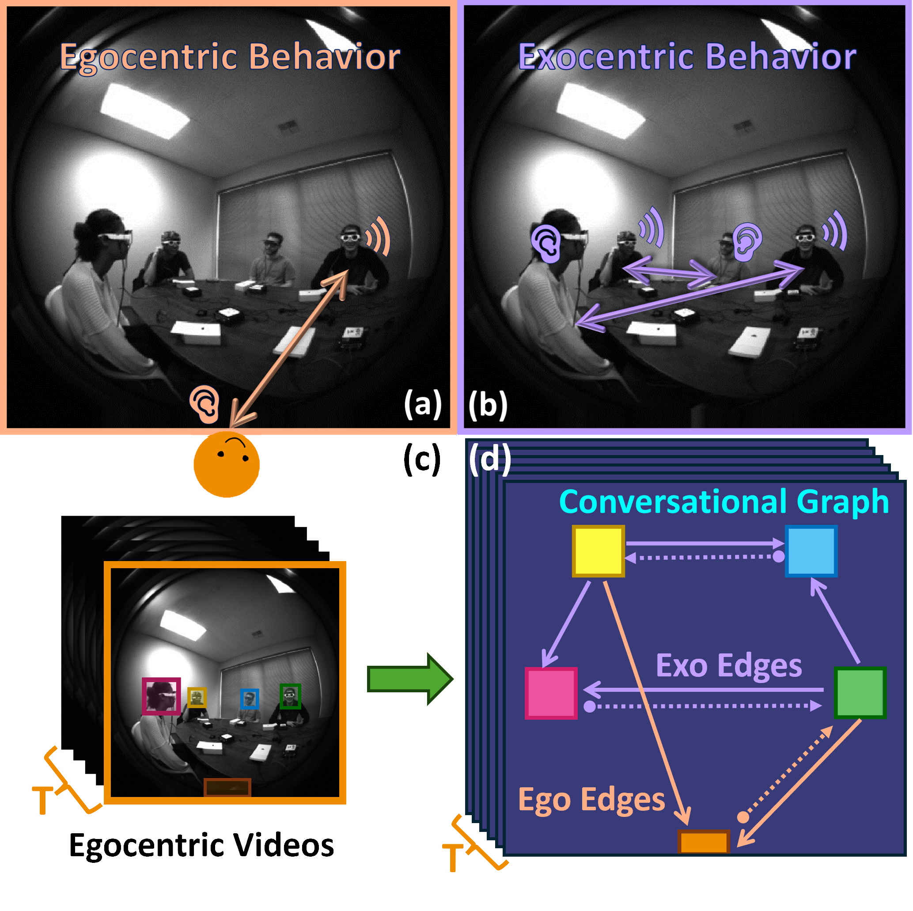

|
1 Georgia Institute of Technology, 2 Meta Reality Labs Research, 3 UIUC
* This work was done during Wenqi's internship at Reality Labs Research
[Code]
[Paper]
[Suppl]
[Arxiv]
[Data]
[Bibtex]

We introduce the Ego-Exocentric Conversational Graph Prediction problem, marking the first attempt to infer exocentric conversational interactions from egocentric videos. We propose a unified multi-modal, multi-task framework -- Audio-Visual Conversational Attention (AV-CONV), for the joint prediction of conversation behaviors -- speaking and listening -- for both the camera wearer as well as all other social partners present in the egocentric video. We customize the self-attention mechanism to model the representations across-time, across-subjects, and across-modalities. We conduct experiments on a challenging egocentric video dataset that includes first-person perspective, multi-speaker, and multi-conversation scenarios.
|
|
Our model takes multiple egocentric frames and multi-channel audio signals.
(a) For each frame, faces of social partners are cropped to serve as raw visual input, while their corresponding head positions are concatenated with audio inputs to generate positional audio signals. Visual and audio signals are encoded by two separate ResNet18 Backbones and are concatenated to produce Audio-Visual features for each cropped head.
(b) After obtaining temporal Audio-Visual feature tubes of video length, they are flattened into a token to be fed into the Conversational Attention Module to produce augmented Single Head Feature feature. Egocentric Classifiers directly take them to predict Egocentric Edge Attributes, and pairs of these features are arbitrarily combined to generate pairwise audio-visual features to predict Exocentric Edge Attributes.
|
|
If you want to cite our work, please use following BibTex:
@misc{jia2023audiovisual,
title={The Audio-Visual Conversational Graph: From an Egocentric-Exocentric Perspective},
author={Wenqi Jia and Miao Liu and Hao Jiang and Ishwarya Ananthabhotla and James M. Rehg and Vamsi Krishna Ithapu and Ruohan Gao},
year={2023},
eprint={2312.12870},
archivePrefix={arXiv},
primaryClass={cs.CV}
}
|
|